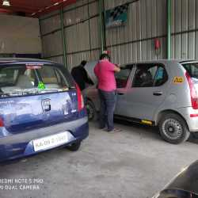
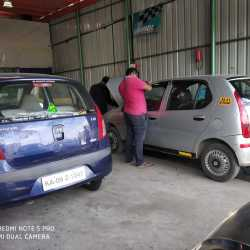

Tech Tune Motors
RR Nagar, Bangalore
RR Nagar, Bangalore
Your one-stop destination for all your automotive needs.Welcome to Tech Tune Motors, your ultimate destination for all your automotive needs! At Tech Tune Motors, we take pride in offering top-notch services in the heart of RR Nagar, Bangalore. With a team of experienced and skilled professionals, we are committed to providing you with the best car repair and maintenance solutions.Whether you require routine services like oil changes and brake inspections or need complex car repairs and tire replacements, our expert technicians are equipped to handle it all. We understand the importance of keeping your vehicle in excellent condition for your safety and peace of mind.At Tech Tune Motors, customer satisfaction is our utmost priority. We are dedicated to delivering high-quality service, using the latest technologies and the best practices in the automotive industry. Our state-of-the-art facility and attention to detail ensure that your vehicle receives the care and service it deserves.We invite you to experience our exceptional services and professionalism. Trust Tech Tune Motors to keep your vehicle running smoothly, so you can focus on the journey ahead. Thank you for choosing Tech Tune Motors, where your satisfaction and safety drive us forward.
 

Tech Tune Motors, located in RR Nagar, Bangalore, stands as a beacon of trust and reliability in the world of automotive services. With a deep commitment to excellence and customer satisfaction, Tech Tune Motors has earned a stellar reputation as the go-to destination for all your automotive needs. In this 500-word exploration, we delve into the heart of this exceptional automotive establishment and understand what makes it a preferred choice for residents of RR Nagar and beyond.
Founded with a vision to provide top-notch automotive services, Tech Tune Motors has remained true to its mission over the years. Established as a one-stop solution for car owners, it offers a wide array of services that encompass everything from routine maintenance to complex repairs. With a team of experienced professionals, the garage takes pride in its ability to diagnose and fix issues with precision, ensuring that your vehicle is in the best possible hands.
Tech Tune Motors offers a comprehensive range of services, making it a versatile destination for all car-related needs. Whether you need a routine oil change, a brake inspection, tire replacement, or more complex car repairs, the experienced technicians at Tech Tune Motors have got you covered. They are equipped with the latest tools and technologies to provide efficient and effective solutions, keeping your vehicle in optimal condition.
What truly sets Tech Tune Motors apart is its customer-centric approach. The team believes in building long-lasting relationships with its clients. They take the time to understand your concerns and requirements, ensuring that every service is personalized to meet your needs. This attention to detail and commitment to customer satisfaction has led to a loyal customer base that trusts Tech Tune Motors with their vehicles year after year.
Tech Tune Motors is not just a service provider; it is a part of the RR Nagar community. The team actively engages in community initiatives and takes pride in contributing to the well-being of the locality. This involvement is a testament to their commitment to the people they serve. In conclusion, Tech Tune Motors in RR Nagar, Bangalore, is a shining example of a service center that places customers at the forefront of its operations. With a legacy of quality service, a comprehensive range of offerings, transparency, and a dedicated team of experts, it has earned the trust and loyalty of its clientele. When you choose Tech Tune Motors, you're not just choosing a service center; you're choosing a partner in your automotive journey.
Address: RR Nagar, Bangalore
Email: info@techtunemotors.com
Phone: +91 1234567890